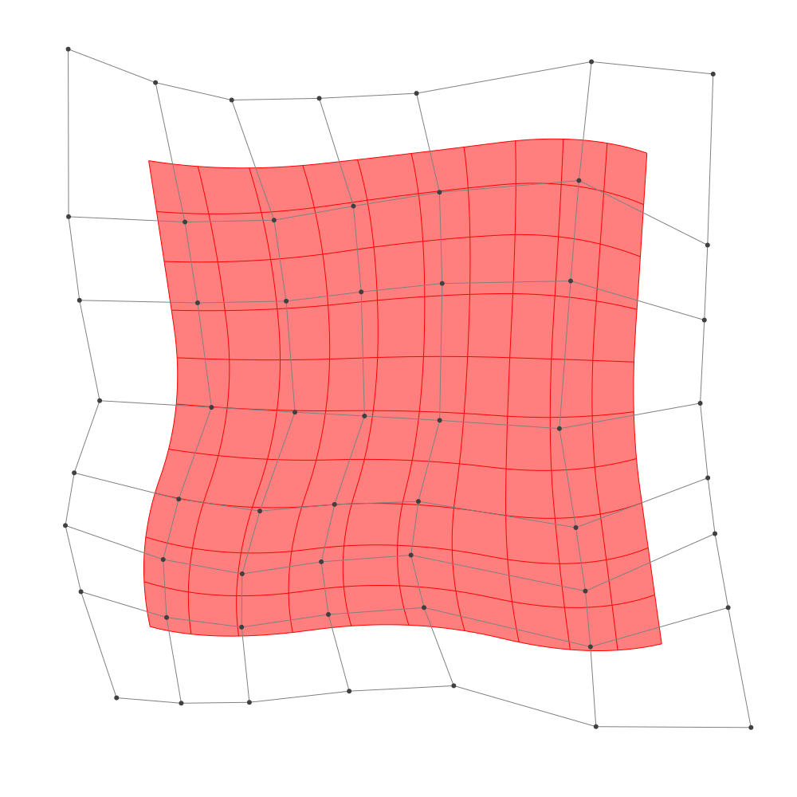
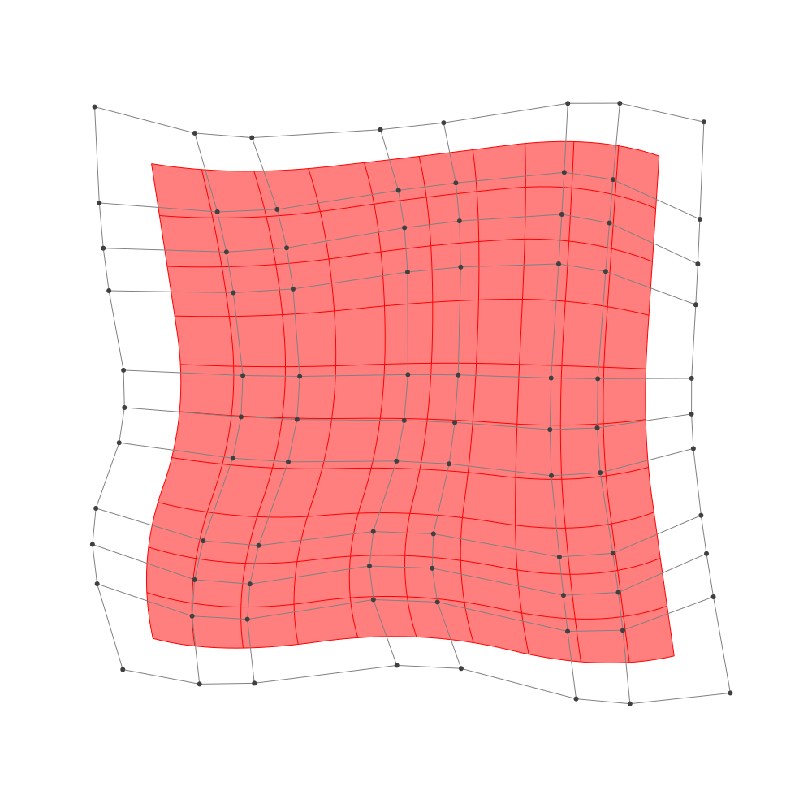

Refinement
BasicBSpline.refinement — FunctionRefinement of B-spline manifold with given B-spline spaces.
julia> p = 2 # degree of polynomial2julia> k = KnotVector(1:8) # knot vectorKnotVector([1.0, 2.0, 3.0, 4.0, 5.0, 6.0, 7.0, 8.0])julia> P = BSplineSpace{p}(k) # B-spline spaceBSplineSpace{2, Float64}(KnotVector([1.0, 2.0, 3.0, 4.0, 5.0, 6.0, 7.0, 8.0]))julia> rand_a = [SVector(rand(), rand()) for i in 1:dim(P), j in 1:dim(P)]5×5 Matrix{StaticArrays.SVector{2, Float64}}: [0.962423, 0.744614] [0.218056, 0.963427] … [0.355843, 0.883391] [0.211379, 0.640661] [0.1404, 0.203838] [0.0407883, 0.237869] [0.994964, 0.953111] [0.316909, 0.583489] [0.481849, 0.285079] [0.977775, 0.382923] [0.862641, 0.0519402] [0.920893, 0.725411] [0.923063, 0.371895] [0.444906, 0.880007] [0.44748, 0.571028]julia> a = [SVector(2*i-6.5, 2*j-6.5) for i in 1:dim(P), j in 1:dim(P)] + rand_a # random5×5 Matrix{StaticArrays.SVector{2, Float64}}: [-3.53758, -3.75539] [-4.28194, -1.53657] … [-4.14416, 4.38339] [-2.28862, -3.85934] [-2.3596, -2.29616] [-2.45921, 3.73787] [0.494964, -3.54689] [-0.183091, -1.91651] [-0.0181514, 3.78508] [2.47778, -4.11708] [2.36264, -2.44806] [2.42089, 4.22541] [4.42306, -4.12811] [3.94491, -1.61999] [3.94748, 4.07103]julia> M = BSplineManifold(a,(P,P)) # Define B-spline manifoldBSplineManifold{2, (2, 2), StaticArrays.SVector{2, Float64}, Tuple{BSplineSpace{2, Float64}, BSplineSpace{2, Float64}}}((BSplineSpace{2, Float64}(KnotVector([1.0, 2.0, 3.0, 4.0, 5.0, 6.0, 7.0, 8.0])), BSplineSpace{2, Float64}(KnotVector([1.0, 2.0, 3.0, 4.0, 5.0, 6.0, 7.0, 8.0]))), StaticArrays.SVector{2, Float64}[[-3.5375767846652137, -3.755385708161827] [-4.2819437454632405, -1.5365731081526304] … [-4.138986546163308, 1.9103105809170238] [-4.144157287742377, 4.383390687167811]; [-2.2886210803857336, -3.8593386715298337] [-2.3595995816311888, -2.296161830257064] … [-1.7938113955496058, 1.9035982685062072] [-2.459211680730665, 3.737869427381597]; … ; [2.4777750587187226, -4.117076943601874] [2.3626406092530643, -2.4480598327371688] … [2.2359053711105012, 2.47198780368837] [2.420892569971323, 4.225410618104668]; [4.423063439811598, -4.128105192355651] [3.9449057358985637, -1.619993159360237] … [3.8656104138499607, 1.5462601581749849] [3.9474796642802716, 4.07102836378]])
h-refinemnet
Insert additional knots to knot vector.
julia> k₊=(KnotVector(3.3,4.2),KnotVector(3.8,3.2,5.3)) # additional knotvectors(KnotVector([3.3, 4.2]), KnotVector([3.2, 3.8, 5.3]))julia> M_h = refinement(M,k₊=k₊) # refinement of B-spline manifoldBSplineManifold{2, (2, 2), StaticArrays.SVector{2, Float64}, Tuple{BSplineSpace{2, Float64}, BSplineSpace{2, Float64}}}((BSplineSpace{2, Float64}(KnotVector([1.0, 2.0, 3.0, 3.3, 4.0, 4.2, 5.0, 6.0, 7.0, 8.0])), BSplineSpace{2, Float64}(KnotVector([1.0, 2.0, 3.0, 3.2, 3.8, 4.0, 5.0, 5.3, 6.0, 7.0, 8.0]))), StaticArrays.SVector{2, Float64}[[-3.5375767846652137, -3.755385708161827] [-3.98419696114403, -2.4240981481563084] … [-4.139762157400169, 2.2812725968546417] [-4.144157287742377, 4.383390687167811]; [-2.725755576883552, -3.822955134351031] [-2.909754254136865, -2.74736552025272] … [-2.6797706900024565, 2.2146257214185097] [-3.0489426431847644, 3.9638018683067724]; … ; [2.4777750587187226, -4.117076943601874] [2.4086943890393275, -3.1156666770830506] … [2.2636534509396244, 2.7350012258508145] [2.420892569971323, 4.225410618104668]; [4.423063439811598, -4.128105192355651] [4.136168817463777, -2.6232379725584023] … [3.877890801414507, 1.9249753890157368] [3.9474796642802716, 4.07102836378]])julia> save_png("2dim_h-refinement.png", M_h) # save image

Note that this shape and the last shape are identical.
p-refinemnet
Increase the polynomial degree of B-spline manifold.
julia> p₊=(1,2) # additional degrees(1, 2)julia> M_p = refinement(M,p₊=p₊) # refinement of B-spline manifoldBSplineManifold{2, (3, 4), StaticArrays.SVector{2, Float64}, Tuple{BSplineSpace{3, Float64}, BSplineSpace{4, Float64}}}((BSplineSpace{3, Float64}(KnotVector([1.0, 2.0, 3.0, 3.0, 4.0, 4.0, 5.0, 5.0, 6.0, 6.0, 7.0, 8.0])), BSplineSpace{4, Float64}(KnotVector([1.0, 2.0, 3.0, 3.0, 3.0, 4.0, 4.0, 4.0, 5.0, 5.0, 5.0, 6.0, 6.0, 6.0, 7.0, 8.0]))), StaticArrays.SVector{2, Float64}[[-3.4874513883367855, -3.2453262086682146] [-3.8035191637730823, -2.190556221891651] … [-3.7769262707725417, 2.50084484927061] [-3.834530770195575, 3.684150823448054]; [-2.5425828422250363, -3.423900810702957] [-2.634187797810476, -2.5876760768385347] … [-2.3235144276304047, 2.3899018164341657] [-2.601195441587435, 3.3602714748198106]; … ; [2.758080207599148, -3.6666984189225484] [2.6702610449957023, -2.762265286645969] … [2.5494730967643453, 2.788194957673077] [2.633373533825547, 3.729185147480286]; [3.9944352525865026, -3.5342014310699486] [3.785608338500598, -2.350069991416466] … [3.6187568005189, 2.2996007591956062] [3.6682845881032646, 3.4977060793990544]])julia> save_png("2dim_p-refinement.png", M_p) # save image

Note that this shape and the last shape are identical.